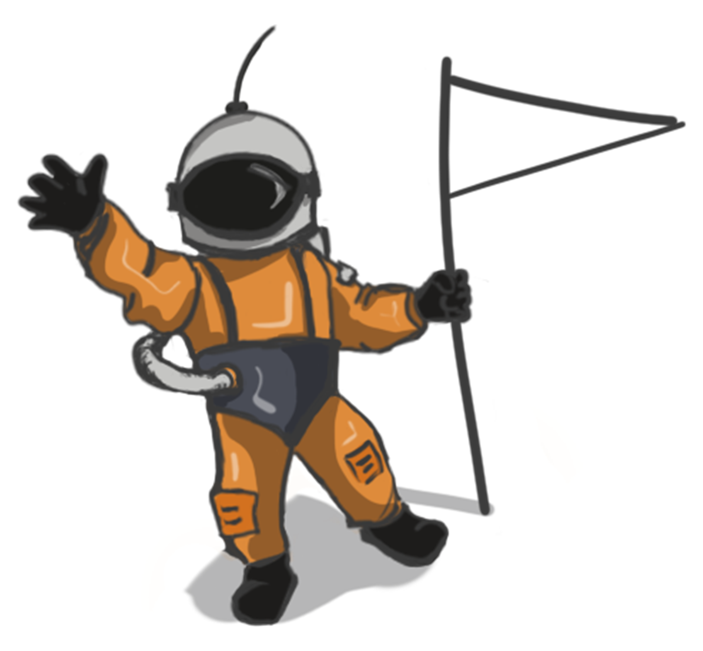
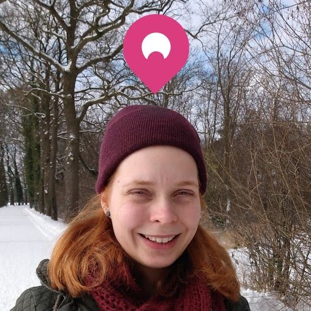
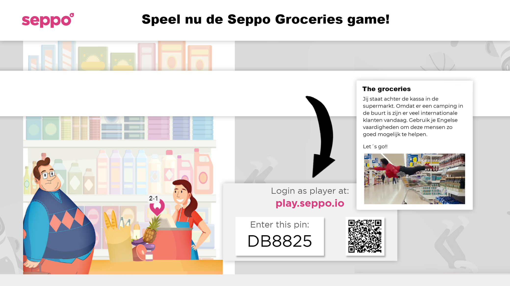
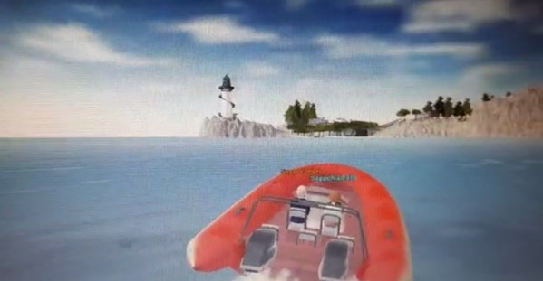
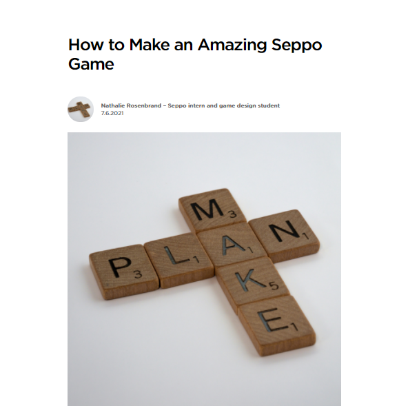

11-10-2019 open day!

Tonight I helped at the open day of my university. I was actually invited there by one of the teachers to showcase a project from the first year (Waterheroes). I really liked it to welcome potential students and meet students from other years.
29-10-2019 propaedeutic

Tonight was amazing. I received my (second) propaedeutic! It was in the evening and I was allowed to take 3 people with me so I asked my parents and sister to come. Upon arrival we were welcomed with coffee and cake and after that we were called to the front of the room individually, to sign our papers and to give a short speech. Last year was amazing and I hope to contine with this great study!
5-12-2019 Project time!

I´m currently working at a team project. We´re making a game that explains the different CMGT roles to the visitors of the open day. The team is amazing and I´m hoping for a good grade!
7-1-2020 Prototyping

During the course prototyping I learnt about how to use simple technology to test complex systems.After some testing around with the open sound protocol (OSC) I was able to add it to a unity project. If the user smiled it would be detected via the AzureFaceAPI and that would send and analyze the data via Wekinator (a machine learning program). Wekinator also uses OSC to send the data to Unity where the character would jump based on whether the user is smiling or not.
6-3-2020 Go Kibi!
For project start-up we had 3 weeks to build a succesful concept to win the attention of a dragonsden filled with succesfull profesionals from the workfield and guess what? We won!! Kibi is a app that scans your receipts and stores them savely for you. The app is also able to separate your purchases into categories and group them so you can keep track of your spending behavior, it also has the option for customized categories. We also made a desktop version for more complicated bookkeeping tasks. Since we won we plan on continuing with Kibi although we miss a capable engineer to make a minimal viable product.
1-5-2020 3D printer

Today my first 3D printer arrived and of course I needed to try it out! I was glad that the printer was already montaged and calibrated when I got it so I could use it right away. I’ve printed a small box that removes dust and irregularities from the filament before it goes into the machine to avoid blockages while printing.
5-6-2020 Printing my own design
I succeeded in printing my first (self-made) 3d design. It is only a simple shopping cart coin, but I hope that I will be able to make and print more complex designs as I continue to practice with Fusion 360.
22-10-2020 Persona minor skilled

For my minor I want to design an app to make studying words/concepts easier and if possible more fun. To discover what my audience (between the 15 and 18 yers) prefers I did a survey and multiple interviews and bundled the results in an empathy map, persona and a user journey map.
4-2-2021 Results Skilled
After 5 months of work I finally finished my minor Skilled! During my minor I tried to gain a better understanding of the design thinking process and to learn more about how to apply gamification and motivation theories. My end result is a prototype in AdobeXD that conveys the main idea of my design. View the prototype here
8-2-2021 Internship at Seppo
Yay! Today I started with my internship at Seppo I will work here from February till July. Seppo offers teachers the possibility to gamify their educational content. They can add exercises to a map (image or real-life map) and create stories with images video’s and other options. I look forward to helping both the Dutch and Finnish team with various projects.
8-2-2021 Seppo demogame
As an introduction to Seppo I created a demo game to discover how Seppo works and what possibilities it offers. The main goal of the game is to introduce potential users (language teachers) to Seppo and its possibilities. The game has 2 levels and shows all the question types (multi choice, creative etc.). This game allowed me to experiment with Seppo. Currently this game is available in the Dutch library for potential clients to try. The game pin is: DB8825
18-4-2020 Printing my own design
Because off the quarantine I was unable to pass all my modules last year. Multimodal interaction was the only one that still remains from the second year. The module was a struggle for me since I have the tendency to come up with the most complicated projects when Saxion allows us the freedom to choose our own. Another obstacle was that scripting is not my best developed skill so, without live labs I struggled to find the motivation the first time. This year I was determined to pass mmi so I decided to keep the project simple, yet funny.
I wanted to experiment with my Kinect 360 sensor and I was able to create an environment where if you give audio input, the ducks come toward you and if you run (in real-life) you can gather all the ducks in the scene.
I am very proud and happy with the result. Maybe it is not the most innovative, complicated project but, it showed me that I don’t always have to overdo it. On the other hand it still required a lot of patience and determination to finish it while working from home and doing the redo next to my full-time internship.
10-6-2021 Seppo demogame
Seppo invited me to stand at our stand on the Dutch IT for education event. I felt bot flattered and a bit nervous
Because of Covid-19 it is not allowed for large groups to gather. As a solution the organisation of the OnderwijsMetICT-event (an IT event for education) decided to use a program, GoMeet to organize the event online.
I created a demo game about cybersecurity for this event (see demo games) The game fit the audience really well and also the biology demos were popular.
The online environment also had a (hidden) feature where you can steer a boat around the island. Here Jelle and I are cruising around.
Overall, I think that being on an event like this is a sign of trust from Seppo but, also an opportunity for me to become more accustomed with interacting with (potential) clients.
10-6-2021 Seppo blogpost
This is not the only place that I keep a blog. In May my colleague asked me to write a blogpost for the website.
After some brainstorming, I decided to make a post about the best way to make a Seppo game. I choose the topic because it incorporated design thinking and the workflow that I used to make Seppo games and since I am very familiar with these topics it easier to write something about it.
The blogpost turned out to be a success and it was posted to the official Seppo Facebook and LinkedIn. This was a great relief for me since I was a bit nervous about writing a blogpost at the start. I also translated the article to Dutch and it is translated to Finnish as well. You can find it here: https://seppo.io/blog/how-to-make-an-amazing-seppo-game/